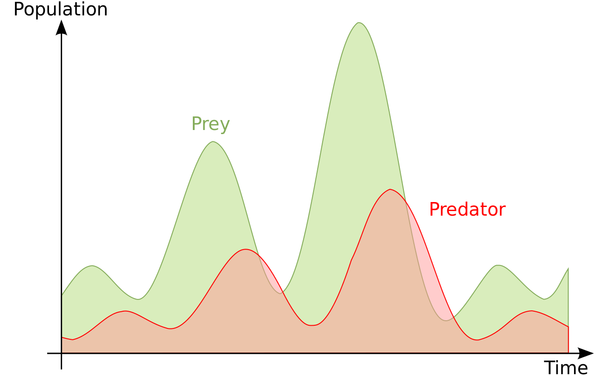

The Lotka–Volterra equations, also known as the predator–prey equations, are a pair of first-order nonlinear differential equations, frequently used to describe the dynamics of biological systems in which two species interact, one as a predator and the other as prey.
These equations, proposed anachronistically by Alfred J. Lotka and Vito Volterra, may be applied generally to model a single predator-prey relationship.
Theoretically, the relationship between the predator and prey is modeled as follows: 
The linear differential equations that model the aforementioned relationship may be described as follows:
=αx-βxy
=δx-γxy